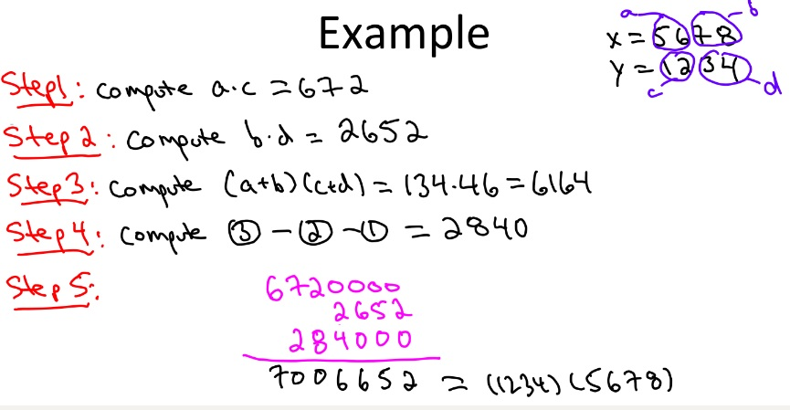
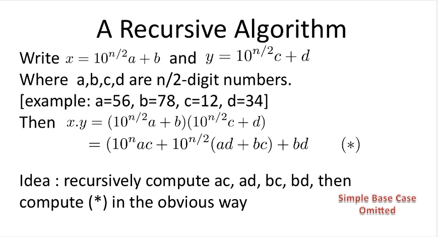
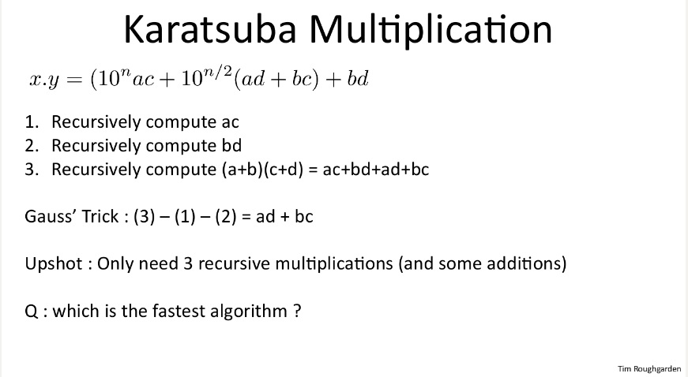

最近在跟coursera上斯坦福大学的算法专项课，其中开篇提到了两个整数相乘的问题，其中最简单的方法就是模拟我们小学的整数乘法，可想而知这不是比较好的算法，这门课可以说非常棒，带领我们不断探索更优的算法，然后介绍可以通过使用分而治之的思想来解决这个问题。下面对该问题的方法以及实现进行介绍。
问题定义
输入：2个n位的整数x和y
输出：x * y如求: 1234567891011121314151617181*2019181716151413121110987654 的结果
求解该问题要注意的是由于整数的位数可能超过基本类型的表示范围，所以一种方式是将其转化为字符串进行表示，另一种方式是可以使用一些语言自带的大整数类型（如Java的BigInteger）。参考一些资料才发现，该问题的解法其实有很多种，主要列举以下：
１．模拟小学乘法： 竖式乘法累加。
２．分治乘法： 最简单的是Karatsuba乘法，一般化以后有Toom-Cook乘法.
３．快速傅里叶变换
４．中国剩余定理
我们主要介绍模拟乘法累加以及使用分治思想的Karatsuba乘法，最后使用Java进行实现。
模拟小学乘法
1 | 7 8 9 6 5 2 |
如上所示，需要将乘数与被乘数逐位相乘，最后再进行累加，时间复杂度为${O(n^2)}$.模拟乘法累加还有一个改进版，上述方法在实现时，每次计算乘法都需要考虑进位，最后在加法时也需要进位，比较麻烦。一种改进的版本如下：1
2
3
4
5
6
7 9 8
× 2 1
-------------
(9)(8) <---- 第1趟: 98×1的每一位结果
(18)(16) <---- 第2趟: 98×2的每一位结果
-------------
(18)(25)(8) <---- 这里就是相对位的和，还没有累加进位
改进的方法先不算任何的进位，也就是说，将每一位相乘，相加的结果保存到同一个位置，到最后才计算进位。我们可以先将结果保存到一个数组中（不考虑进位），最后对数组从右向左进行遍历，大于10进行进位。Java实现如下：1
2
3
4
5
6
7
8
9
10
11
12
13
14
15
16
17
18
19
20
21
22
23
24
25
26
27
28
29
30
31public class BigNumMul {
//simple method 模拟乘法累加
public static String bigNumberMul(String num1, String num2) {
// 分配一个空间，用来存储运算的结果，num1长的数 * num2长的数，结果不会超过num1+num2长
int[] res = new int[num1.length() + num2.length()];
// 先不考虑进位问题，根据竖式的乘法运算，num1的第i位与num2的第j位相乘，结果应该存放在结果的第i+j位上
for (int i=0; i<num1.length(); i++) {
int a = num1.charAt(i) - '0';
for (int j=0; j<num2.length(); j++) {
int b = num2.charAt(j) - '0';
res[i+j] += a * b; //max: num1.length()+num2.length()-2
}
}
StringBuilder sb = new StringBuilder();
//单独处理进位
int carry = 0;
//最多就到res.length-2, 最后一个元素没有被占用，还是初始值0
for (int k=res.length-2; k >= 0; k--) {
int digit = (res[k] + carry) % 10;
carry = (res[k] + carry) / 10;
sb.insert(0, digit);
}
if (carry > 0) {
sb.insert(0, carry);
}
String str = sb.toString().replaceFirst("^0*", "");
return str.substring(0,str.length()-1);
}
}
显然使用$O(n^2)$的算法是不够好的，我们应该想一下有没有更好的算法，就像这门课上经常说的一句：Can we do better ?
分治：Karatsuba算法
分治算法的主要思想是能将问题分解为输入规模更小的子问题，然后递归求解子问题，最后将子问题的结果合并得到原问题的结果，最典型的如归并排序算法。为了得到规模更小的子问题，就要将较大的整数拆分为位数较少的两个整数，参考coursera上的算法专项课，主要计算过程如下：

如上图所示，将每个数分别拆分为两部分，分别计算ac, bd, 以及(a+b)(c+d)，最后再减去前面两个，将其组合成最终的结果。我们采用更一般的方式将其表达出来，相应计算方法如下：

上述给出了更通用的写法，将ｘ和ｙ同分解后的更小的整数进行表示，最后通过递归的计算ac, ad, bc, bd就可以得到x*y的结果。上述是没有优化过的分治算法，每次递归需要４次乘法，合并结果需要O(n)时间复杂度，所以可以得到时间复杂度的表示：
$${T(n) = 4T(n/2) + O(n)}$$
通过主方法，可以求得上述时间复杂度为$O(n^2)$，并没有得到好的改善。
Karatsuba算法将上述的４次乘法优化为３次从而减少了时间复杂度。具体过程如下：

可以看到上述利用(a+b)(c+d)的结果减去ac和bd得到ad+bc的结果，从而只需要计算三次乘法，其时间复杂度可以表示为：
$$T(n)=3T(n/2)+6n=O(n^{log_{2}3})$$
根据上述算法，使用Java进行实现代码如下：1
2
3
4
5
6
7
8
9
10
11
12
13
14
15
16
17
18
19
20
21
22
23
24
25
26//Karatsuba乘法
//此种情况使用long时,数过大可能出现越界,应考虑使用BigInteger
public static long karatsuba(long num1, long num2) {
//递归终止条件
if (num1 < 10 || num2 < 10) {
return num1 * num2;
}
// 计算拆分长度
int size1 = String.valueOf(num1).length();
int size2 = String.valueOf(num2).length();
int halfN = Math.max(size1, size2) / 2;
/* 拆分为a, b, c, d */
long a = Long.valueOf(String.valueOf(num1).substring(0, size1-halfN));
long b = Long.valueOf(String.valueOf(num1).substring(size1-halfN));
long c = Long.valueOf(String.valueOf(num2).substring(0, size2-halfN));
long d = Long.valueOf(String.valueOf(num2).substring(size2-halfN));
// 计算z2, z0, z1, 此处的乘法使用递归
long z1 = karatsuba(a, c);
long z2 = karatsuba(b, d);
long z3 = karatsuba((a + b), (c + d)) - z1 - z2;
return (long)(z1 * Math.pow(10, 2*halfN) + z2 + z3 * Math.pow(10, halfN));
}
注意上述递归的终止条件以及如何表示a, b, c, d. 上述实现使用的是Java中的long类型，但是当整数变大时，使用long类型可能会发生溢出，这里可以使用String来模拟整数的加法及乘法，或者使用Java的BigInteger类型，其实BigInteger内部也是使用的String进行存储，我使用的是BigInteger类型，实现代码如下：1
2
3
4
5
6
7
8
9
10
11
12
13
14
15
16
17
18
19
20
21
22
23
24
25
26
27
28//使用BigInteger的karatsuba算法
//注意BigInteger的运算没有操作符重载
//参考: coursera算法专项1
public static BigInteger karatsuba(BigInteger num1, BigInteger num2) {
if (num1.compareTo(BigInteger.valueOf(10)) < 0 || num2.compareTo(BigInteger.valueOf(10)) < 0) {
return num1.multiply(num2);
}
int n = Math.max(num1.toString().length(), num2.toString().length());
int halfN = n / 2 + n % 2; //另一种划分方法
//返回num1 / halfN 和 num1 % halfN
BigInteger[] a_b = num1.divideAndRemainder(BigInteger.valueOf(10).pow(halfN));
BigInteger a = a_b[0];
BigInteger b = a_b[1];
BigInteger[] c_d = num2.divideAndRemainder(BigInteger.valueOf(10).pow(halfN));
BigInteger c = c_d[0];
BigInteger d = c_d[1];
BigInteger step1 = karatsuba(a, c);
BigInteger step2 = karatsuba(b, d);
BigInteger step3 = karatsuba(a.add(b), c.add(d));
BigInteger step4 = step3.subtract(step2).subtract(step1); //step3-step2-step1
BigInteger res = step1.multiply(BigInteger.valueOf(10).pow(2*halfN)).add(step2)
.add(step4.multiply(BigInteger.valueOf(10).pow(halfN)));
return res;
}
最后的测试代码如下：1
2
3
4
5
6
7
8
9
10
11
12
13public static void main(String[] args) {
Scanner sc = new Scanner(System.in);
String a = sc.next();
String b = sc.next();
// 开始计算
//String str = BigNumMul.bigNumberMul(a, b);
//long res = BigNumMul.karatsuba(Long.valueOf(a), Long.valueOf(b));
//String str = Long.toString(res);
BigInteger res = BigNumMul.karatsuba(new BigInteger(a), new BigInteger(b));
String str = res.toString();
System.out.println(a + " * " + b + " = " + str);
}
总结与感想
（1）对一个问题要深入调研和分析，多尝试不同的解决方法。
（2）可以多分析一些诸如此类的经典问题，还是比较有意思的。
参考资料：
3.https://stackoverflow.com/questions/17531042/karatsuba-algorithm-without-biginteger-usage
4.https://chenyvehtung.github.io/2017/03/02/about-multiplication.html
![微信分享二维码]()